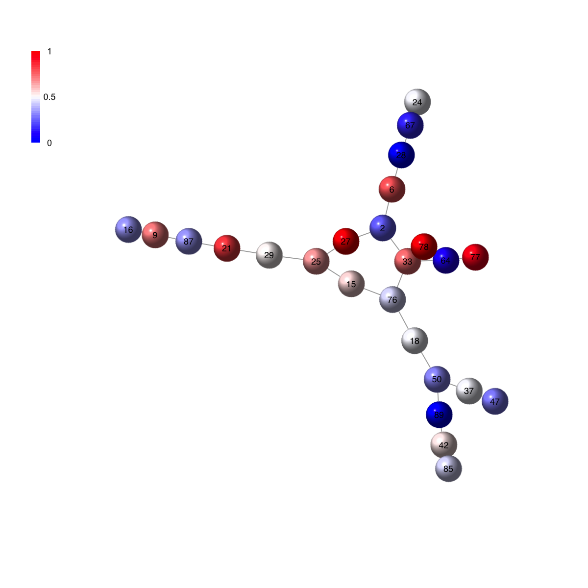

Description
visNet is supposed to visualise a graph object of
class "igraph" or "graphNEL". It also allows the
color-coding of vertices by providing the input pattern.
Usage
visNet(g, pattern = NULL, colormap = c("bwr", "jet", "gbr", "wyr", "br", "yr", "rainbow",
"wb"), ncolors = 40, zlim = NULL, colorbar = T, newpage = T, glayout = layout.fruchterman.reingold,
vertex.frame.color = NA, vertex.size = NULL, vertex.color = NULL, vertex.shape = NULL,
vertex.label = NULL, vertex.label.cex = NULL, vertex.label.dist = NULL, vertex.label.color = "black",
...)
Arguments
- g
- an object of class "igraph" or "graphNEL"
- pattern
- a numeric vector used to color-code
vertices/nodes. Notably, if the input vector contains
names, then these names should include all node names of
input graph, i.e. V(g)$name, since there is a mapping
operation. After mapping, the length of the patern vector
should be the same as the number of nodes of input graph;
otherwise, this input pattern will be ignored. The way of
how to color-code is to map values in the pattern onto
the whole colormap (see the next arguments: colormap,
ncolors, zlim and colorbar)
- colormap
- short name for the colormap. It can be
one of "jet" (jet colormap), "bwr" (blue-white-red
colormap), "gbr" (green-black-red colormap), "wyr"
(white-yellow-red colormap), "br" (black-red colormap),
"yr" (yellow-red colormap), "wb" (white-black colormap),
and "rainbow" (rainbow colormap, that is,
red-yellow-green-cyan-blue-magenta). Alternatively, any
hyphen-separated HTML color names, e.g.
"blue-black-yellow", "royalblue-white-sandybrown",
"darkgreen-white-darkviolet". A list of standard color
names can be found in
http://html-color-codes.info/color-names
- ncolors
- the number of colors specified over the
colormap
- zlim
- the minimum and maximum z/patttern values for
which colors should be plotted, defaulting to the range
of the finite values of z. Each of the given colors will
be used to color an equispaced interval of this range.
The midpoints of the intervals cover the range, so that
values just outside the range will be plotted
- colorbar
- logical to indicate whether to append a
colorbar. If pattern is null, it always sets to false
- newpage
- logical to indicate whether to open a new
page. By default, it sets to true for opening a new page
- glayout
- either a function or a numeric matrix
configuring how the vertices will be placed on the plot.
If layout is a function, this function will be called
with the graph as the single parameter to determine the
actual coordinates. This function can be one of
"layout.auto", "layout.random", "layout.circle",
"layout.sphere", "layout.fruchterman.reingold",
"layout.kamada.kawai", "layout.spring",
"layout.reingold.tilford",
"layout.fruchterman.reingold.grid", "layout.lgl",
"layout.graphopt", "layout.svd" and "layout.norm". A full
explanation of these layouts can be found in
http://igraph.sourceforge.net/doc/R/layout.html
- vertex.frame.color
- the color of the frame of the
vertices. If it is NA, then there is no frame
- vertex.size
- the size of each vertex. If it is a
vector, each vertex may differ in size
- vertex.color
- the fill color of the vertices. If it
is NA, then there is no fill color. If the pattern is
given, this setup will be ignored
- vertex.shape
- the shape of each vertex. It can be
one of "circle", "square", "csquare", "rectangle",
"crectangle", "vrectangle", "pie"
(http://igraph.sourceforge.net/doc/R/vertex.shape.pie.html),
"sphere", and "none". If it sets to NULL, these vertices
with negative will be "csquare" and the rest "circle".
- vertex.label
- the label of the vertices. If it is
NA, then there is no label. The default vertex labels are
the name attribute of the nodes
- vertex.label.cex
- the font size of vertex labels.
- vertex.label.dist
- the distance of the label from
the center of the vertex. If it is 0 then the label is
centered on the vertex. If it is 1 then the label is
displayed beside the vertex.
- vertex.label.color
- the color of vertex labels.
- ...
- additional graphic parameters. See
http://igraph.sourceforge.net/doc/R/plot.graph.html
for the complete list.
Examples
# 1) generate a random graph according to the ER model
g <- erdos.renyi.game(100, 1/100)
# 2) produce the induced subgraph only based on the nodes in query
subg <- dNetInduce(g, V(g), knn=0)
# 3) visualise the subg with vertices being color-coded by the pattern
pattern <- runif(vcount(subg))
names(pattern) <- V(subg)$name
visNet(g=subg, pattern=pattern, colormap="bwr", vertex.shape="sphere")

){kind=link}